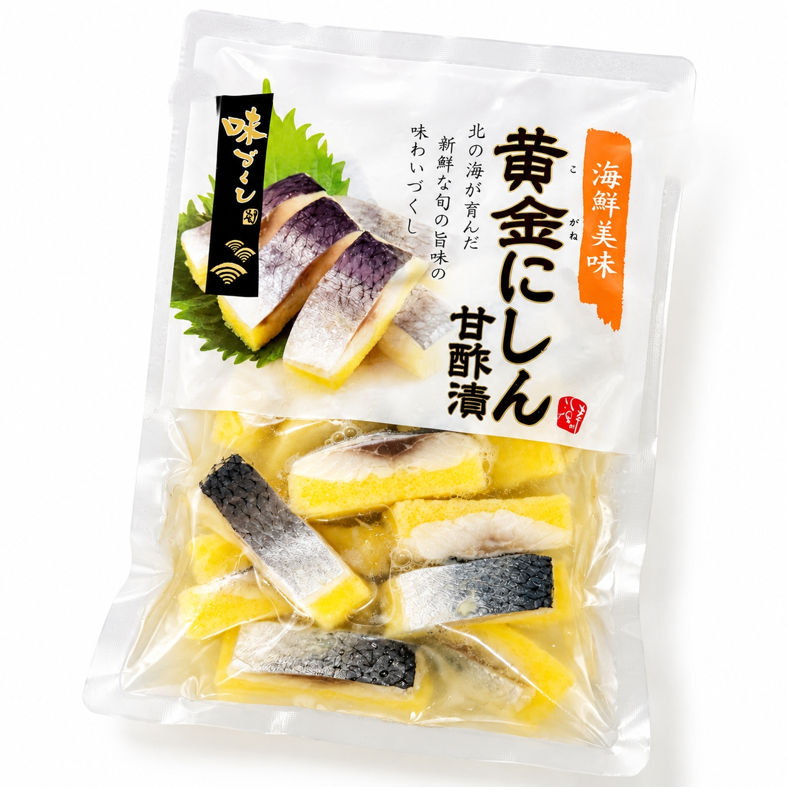

SCENE 01
J022

j 海鮮・魚介類
黄金にしん甘酢漬
【脂の乗ったにしんと、ぷちぷち卵の絶妙なハーモニー。】
- 内容量170ｇ/ｐ・400ｇ/ｐ
- 保存冷凍
- 産地ノルウェー
商品の特徴を読む
食卓にもう一品彩りを加えたい時、手軽に楽しめる本格的な海の幸はいかがでしょうか。この「黄金にしん甘酢漬」は、脂がのったノルウェー産のニシンと、プチプチとした食感が楽しいカラフトししゃも卵を、独自の製法で丁寧に結着させた逸品です。口に運ぶと、まずニシンの豊かな旨味と甘みが広がり、続いてししゃも卵の小気味よい歯ごたえが楽しめます。全体をまとめるのは、レモン果汁を加えたさっぱりとした特製の甘酢。程よい酸味が後を引く、飽きのこない上品な味わいに仕上げました。冷凍庫から出して解凍するだけで、すぐにお召し上がりいただけます。温かいご飯のお供はもちろん、お酒のおつまみ、ちらし寿司や手巻き寿司の具材としても相性抜群です。いつもの食卓を少し華やかにする一品として、ぜひご家庭でお楽しみください。
公式サイトへ移動します。価格・在庫・配送条件は移動先で最終確認してください。
SCENE 02
この「黄金にしん甘酢漬」は、脂がのったノルウェー産のニシンと、プチプチとした食感が楽しいカラフトししゃも卵を、独自の製法で丁寧に結着させた逸品です。
SCENE 03
食卓にもう一品彩りを加えたい時、手軽に楽しめる本格的な海の幸はいかがでしょうか。
PRODUCT INFORMATION
購入前に確認したい商品情報
- 商品名
- 黄金にしん甘酢漬
- 商品規格
- 170ｇ/ｐ・400ｇ/ｐ
- 保存方法
- 冷凍
- 原産国
- ノルウェー
- 製造地
- 日本
- 賞味期限
- 発送日より3ヶ月
原材料
にしん（ノルウェー）、カラフトししゃも卵、魚肉すり身、砂糖混合異性化液糖、醸造酢、食塩、レモン果汁／調味料（アミノ酸等）、カロチノイド色素、リン酸塩（Na）、香辛料、酵素、香料、（一部に乳成分を含む）
FAQ
購入前のよくあるご質問
おすすめの解凍方法はありますか？
冷蔵庫で一晩ほどかけてゆっくり自然解凍していただくのが、最も美味しくお召し上がりいただける方法です。お急ぎの場合は、パックのまま流水解凍も可能です。
子供でも食べられますか？
さっぱりとした甘酢味で骨も処理済みですので、多くのお子様にもお楽しみいただけます。念のため、小さなお子様にお召し上がりいただく際は保護者の方が一口サイズに分けてあげてください。
MEAT PLUS OFFICIAL SHOP
【脂の乗ったにしんと、ぷちぷち卵の絶妙なハーモニー。】
仕入れ・加工・梱包・発送まで自社で行うMEAT PLUSの公式オンラインショップでご注文いただけます。
公式オンラインショップで購入する